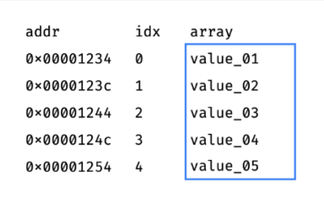
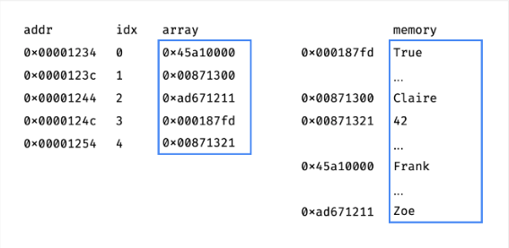

You can install NumPy using pip or conda. For pip, you can install NumPy by running the following command in your terminal:
pip install numpy
.
For conda you can install NumPy by running the following command in your terminal:
conda install numpy
.
NumPy is a Python library used for mathematical computations. One of the main funtionalities and defining features of the library is the array. Arrays are similar to lists, but are much more optimized for speed and efficiency. They also allow for operations to be performed on the entire array at once and come with a multitude of built-in functions.
The NumPy library is coded in C and Fortran, two compiled languages that are highly optimized for speed and math. An important difference between Python lists and NumPy arrays are that NumPy arrays are stored contiguously in memory and are homogenous, while Python lists are not.


To the left is a diagram showing a NumPy array in memory. Each element is adjacent to each other, which makes accessing each element extremely fast. To the right is a diagram showing a Python list in memory. Each element holds a pointer to the actual value, rather than the value itself. Although this does allow lists to hold elements of different types (hence heterogenous), it takes much more time to access each element since they are spread out in memory. Another upside of a homogenous array is that python doesn't have to check the type of each element when performing operations on the array. This also allows for vectorization, which is the process of performing operations on the entire array at once.
Initializing NumPy Arrays
There are many ways to create NumPy arrays. The most common way is to use the array function, which takes in a list and returns a NumPy array. For example, if you would like to create an array of the numbers 1-10, you can type the following:
import numpy as np
arr = np.array([1,2,3,4,5,6,7,8,9,10])
You can also create arrays of zeros, ones, or random numbers. If you would like to create an array of 10 zeros, you can type the following:
arr = np.zeros(10)
If you would like to create an array of 10 ones, you can type the following:
arr = np.ones(10)
If you would like to create an array of 10 random numbers, you can type the following:
arr = np.random.rand(10)
You can also create arrays of a certain shape. For example, if you would like to create a 2x2 array of zeros, you can type the following:
arr = np.zeros((2,2))
If you would like to create a 2x2 array of ones, you can type the following:
arr = np.ones((2,2))
If you would like to create a 2x2 array of random numbers, you can type the following:
arr = np.random.rand(2,2)
Array Operations
You can perform operations on NumPy arrays. For example, if you would like to add 1 to each element in an array, you can type the following:
arr = arr + 1
This also works for the +,-,*,/ operators, and you can even use them to add, subtract, multiply, and divide arrays of the same size. For example, if you would like to add two arrays together, you can do:
arr1 = np.array([1,2,3,4,5])
arr2 = np.array([6,7,8,9,10])
arr3 = arr1 + arr2
Built in Methods
NumPy comes with many built in methods to help with computations and data collection. For example you can find the sum of all elements in an array by doing:
arr = np.array([1,2,3,4,5])
sum = arr.sum()
You can also find the mean, standard deviation, variance, min and max by doing:
mean = arr.mean()
std = arr.std()
var = arr.var()
min = arr.min()
max = arr.max()
Booleans
NumPy also allows you to use booleans to filter through arrays. For example, if you would like to find all elements in an array that are greater than 5, you can do:
arr = np.array([1,2,3,4,5,6,7,8,9,10])
arr2 = arr[arr > 5]
This will return an array of all elements in arr that are greater than 5. This can also be paired with and and or operators. You can find all elements in an array that are greater than 5 and less than 10 with:
arr2 = arr[(arr > 5) and (arr < 10)]
SciPy
How to Install
You can install SciPy using pip or conda. For pip, you can install NumPy by running the following command in your terminal:
pip install scipy
For conda you can install SciPy by running the following command in your terminal:
conda install scipy
About SciPy
SciPy is a library that extends NumPy and its provided arrays and other key functionalities. It is used for more complex scientific computations and for visualizing data. The library consists of the following subpackages:
Integration, Optimization, Interpolation, Fourier Transformations, Signal Processing, Linear Algebra, Compressed Sparse Graph Routines, Spatial data structures and algorithms, Statistics, Multidimensional image processing
Constants Subpackage
To import the constants subpackage:
from scipy.integrate as integrate
The constants subpackage contains math and physics constants such as pi, the speed of light, and the mass of a proton:
print(constants.speed_of_light)
The library also allows you to convert units from the imperial system to SI units:
For example, if you would like to convert 5 pounds to kilograms, you can type the following:
print(5*constants.lb)
Integration Subpackage
The integration subpackage is used for calculating definite integrals. For example, suppose you have the function y^2 + 3y and want to calculate the integral from 0 to 2 of the function. We will set the function equal to a variable g:
g = lambda y: y**2 + 3*y
We can calculate the integral from 0 to 2 by using the quad method provided by the Integration Subpackage:
print(integrate.quad(g,0,2))
The first parameter of the method is the function and the second 2 are the lower and upper bounds of the integration. When we run the code, we will get the result in the form of a coordinate pair of numbers. The first number is the answer and the second number is the degree of error.
Linear Algebra Subpackage
The linear algebra subpackage contains many methods for manipulating and computing matrices. One such method is inv method. It is used for finding the inverse of a 2d array or a matrix.
For example, say you have the following array:
arr2d = np.array([[1,2,3],[4,5,6],[7,8,9]])
To find the inverse we can do the following:
print(linalg.inv(arr2d))
This will print the inverse of arr2d in which the rows and columns are swapped.